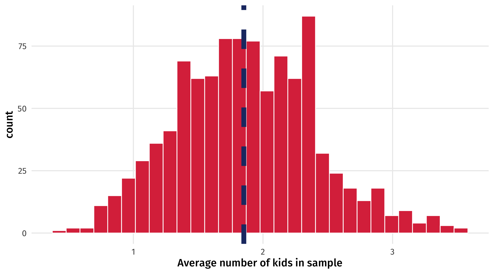
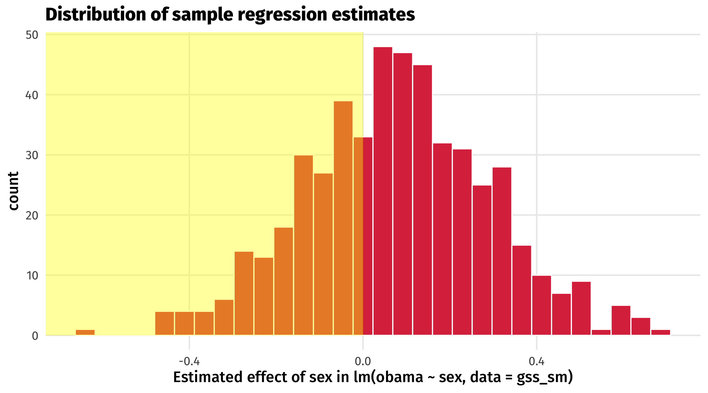
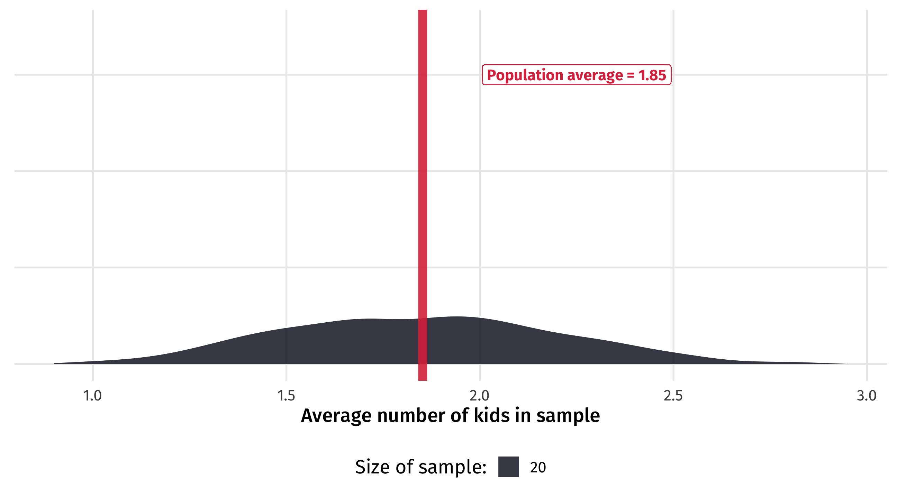
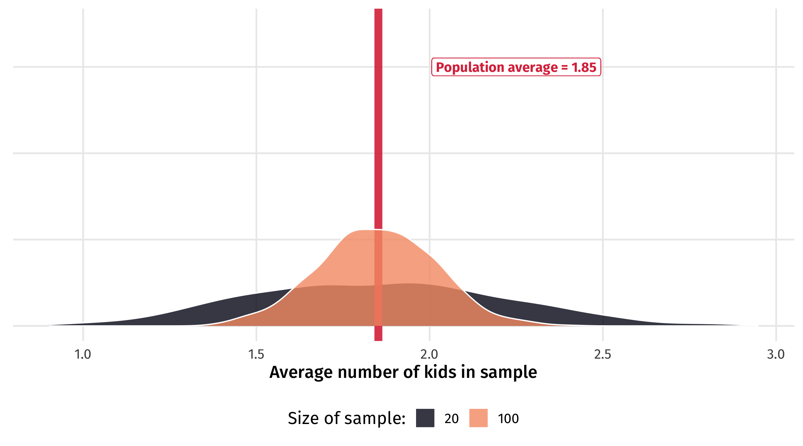
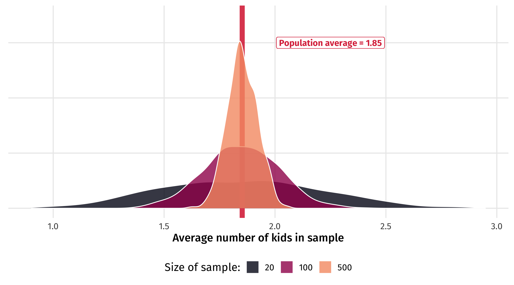
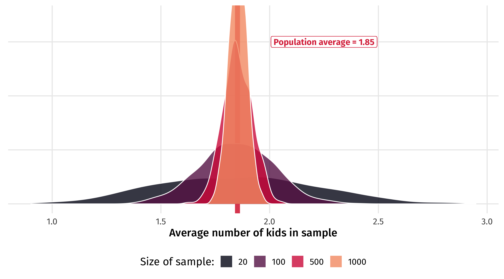
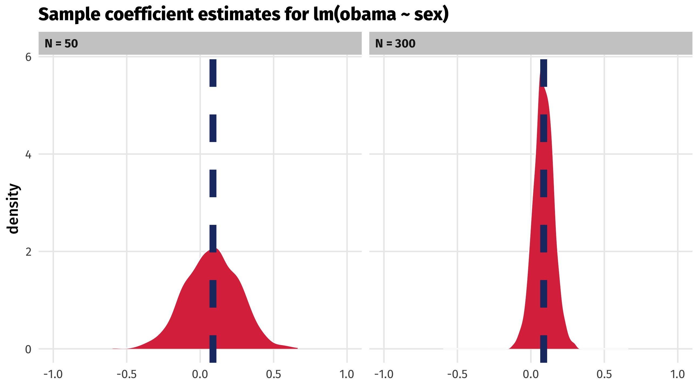
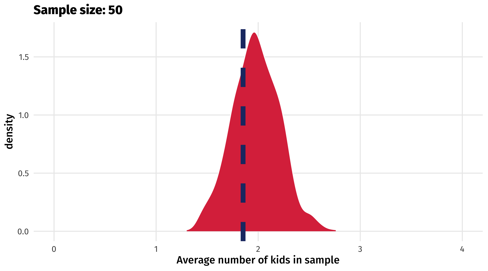
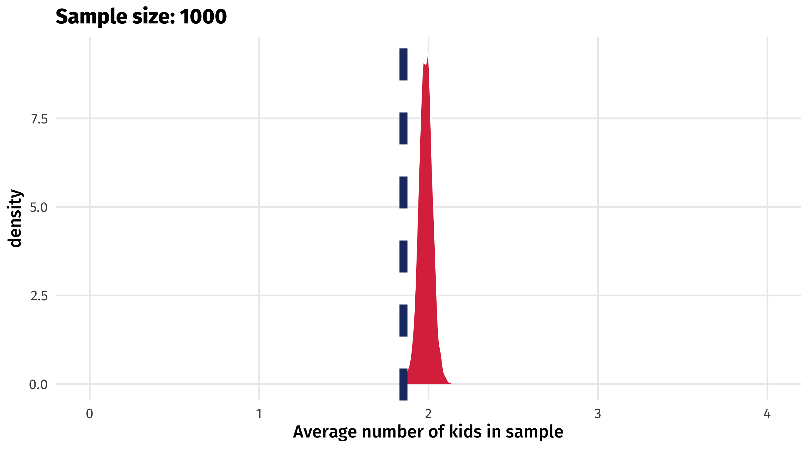
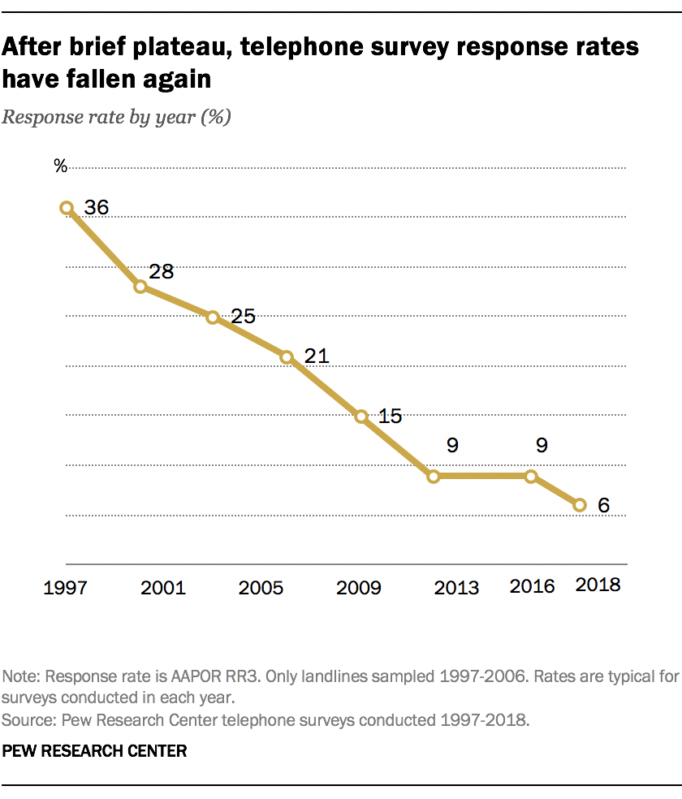

Uncertainty
POL51
November 21, 2024
Plan for today
Why are we uncertain?
Sampling
Good and bad samples
Where things stand
So far: worrying about causality
how can we know the effect of X on Y is not being confounded by something else?
Last bit: how confident are we in our estimates given…
that our estimates are based on samples?
Uncertainty in the wild

Uncertainty in the wild

Uncertainty in the wild
The “bounds” in geom_smooth tells us something about how confident we should be in the line:

Uncertainty
Polling error, margin of error, uncertainty bounds, all help to quantify how uncertain we feel about an estimate
Vague sense that we are uncertain about what we are estimating
But why are we uncertain? And how can uncertainty be quantified?
Why are we uncertain?
Why are we uncertain?
We don’t have all the data we care about
We have a sample, such as a survey, or a poll, of a population
Problem each sample will look different, and give us a different answer to the question we are trying to answer
What’s going on here? terminology
| Term | Meaning | Example |
|---|---|---|
| Population | All of the instances of the thing we care about | American adults |
| Population parameter | The thing about the population we want to know | Average number of kids among American adults |
| Sample | A subset of the population | A survey |
| Sample estimate | Our estimate of the population parameter | Average number of kids in survey |
Boring example: kids
How many children does the average American adult have? (Population parameter)
Let’s pretend there were only 2,867 people living in the USA, and they were all perfectly sampled in gss_sm
| year | age | childs | degree | race | sex |
|---|---|---|---|---|---|
| 2016 | 38 | 1 | High School | Black | Female |
| 2016 | 47 | 3 | Graduate | White | Male |
| 2016 | 23 | 0 | High School | White | Male |
| 2016 | 57 | 3 | High School | White | Male |
| 2016 | 35 | 2 | Bachelor | White | Female |
Boring example: kids
How many children does the average American adult have?
Sampling
Now imagine that instead of having data on every American, we only have a sample of 10 Americans
Why do we have a sample? Because interviewing every American is prohibitively costly
Same way a poll works: a sample to estimate American public opinion
Sampling
One sample of 10 people using rep_sample_n() from moderndive:
# A tibble: 10 × 33
# Groups: replicate [1]
replicate year id ballot age childs sibs degree race sex region
<int> <dbl> <dbl> <labelled> <dbl> <dbl> <lab> <fct> <fct> <fct> <fct>
1 1 2016 422 1 31 2 4 Lt Hi… Black Fema… South…
2 1 2016 2101 3 65 2 3 High … White Fema… E. No…
3 1 2016 1166 3 31 3 6 High … White Male South…
4 1 2016 2408 1 67 2 0 High … White Male Pacif…
5 1 2016 1148 2 52 0 2 High … Other Male South…
6 1 2016 1988 1 84 2 1 Bache… White Male South…
7 1 2016 755 2 31 2 7 Lt Hi… Other Fema… South…
8 1 2016 2361 3 62 3 2 Gradu… White Fema… Mount…
9 1 2016 1515 2 23 0 0 High … White Fema… New E…
10 1 2016 923 1 66 4 1 Bache… White Male Mount…
# ℹ 22 more variables: income16 <fct>, relig <fct>, marital <fct>, padeg <fct>,
# madeg <fct>, partyid <fct>, polviews <fct>, happy <fct>, partners <fct>,
# grass <fct>, zodiac <fct>, pres12 <labelled>, wtssall <dbl>,
# income_rc <fct>, agegrp <fct>, ageq <fct>, siblings <fct>, kids <fct>,
# religion <fct>, bigregion <fct>, partners_rc <fct>, obama <dbl>Note
size = size of the sample; reps = number of samples
Sample estimate
We can then calculate the average number of kids among that sample of 10 people
| replicate | avg_kids |
|---|---|
| 1 | 2.3 |
this is our sample estimate of the population parameter
Notice that it does not equal the true population parameter (1.87)
The trouble with samples
Problem: each sample will give you a different estimate. Instead of taking 1 sample of size 10, let’s take 1,000 samples of size 10:
kids_10 = gss_sm %>% rep_sample_n(size = 10, reps = 1000) %>%
summarise(avg_kids = mean(childs, na.rm = TRUE))
kids_10| replicate | avg_kids |
|---|---|
| 1 | 1.6 |
| 2 | 1.8 |
| 3 | 1.3 |
| 4 | 2.8 |
| 5 | 1.9 |
| 6 | 2.3 |
| 7 | 1.3 |
| 8 | 1.7 |
| 9 | 0.5 |
| 10 | 1.5 |
| 11 | 2.6 |
| 12 | 0.5 |
| 13 | 2.1 |
| 14 | 1.3 |
| 15 | 2.4 |
| 16 | 1.4 |
| 17 | 2.7 |
| 18 | 2.1 |
| 19 | 1.9 |
| 20 | 1.4 |
| 21 | 2.1 |
| 22 | 1.7 |
| 23 | 1.7 |
| 24 | 1.4 |
| 25 | 2.1 |
| 26 | 1.6 |
| 27 | 2.4 |
| 28 | 1.8 |
| 29 | 1.5 |
| 30 | 1.1 |
| 31 | 1.9 |
| 32 | 2 |
| 33 | 1.2 |
| 34 | 1.5 |
| 35 | 2.4 |
| 36 | 2 |
| 37 | 2.2 |
| 38 | 1.8 |
| 39 | 2.9 |
| 40 | 2.5 |
| 41 | 2.1 |
| 42 | 0.9 |
| 43 | 0.9 |
| 44 | 1.1 |
| 45 | 2 |
| 46 | 1.2 |
| 47 | 1.7 |
| 48 | 1.4 |
| 49 | 1.8 |
| 50 | 2.7 |
| 51 | 2.7 |
| 52 | 1.5 |
| 53 | 2.3 |
| 54 | 2.6 |
| 55 | 1.4 |
| 56 | 2 |
| 57 | 1.8 |
| 58 | 2.2 |
| 59 | 1.7 |
| 60 | 2.5 |
| 61 | 2.2 |
| 62 | 1.9 |
| 63 | 2 |
| 64 | 2.4 |
| 65 | 1.9 |
| 66 | 1.7 |
| 67 | 1.2 |
| 68 | 1 |
| 69 | 1.8 |
| 70 | 1.8 |
| 71 | 2 |
| 72 | 1.4 |
| 73 | 1.4 |
| 74 | 1.3 |
| 75 | 1.6 |
| 76 | 1.9 |
| 77 | 3 |
| 78 | 2.7 |
| 79 | 2.1 |
| 80 | 1.1 |
| 81 | 1.7 |
| 82 | 2.4 |
| 83 | 2.2 |
| 84 | 2.3 |
| 85 | 2.2 |
| 86 | 2.6 |
| 87 | 1.89 |
| 88 | 2.2 |
| 89 | 2.8 |
| 90 | 1.3 |
| 91 | 2.4 |
| 92 | 2 |
| 93 | 1.6 |
| 94 | 2.2 |
| 95 | 1.6 |
| 96 | 1.5 |
| 97 | 1.3 |
| 98 | 1.1 |
| 99 | 2.1 |
| 100 | 1.9 |
| 101 | 2 |
| 102 | 1.1 |
| 103 | 1.9 |
| 104 | 2 |
| 105 | 2.5 |
| 106 | 1.5 |
| 107 | 1.2 |
| 108 | 2.3 |
| 109 | 1 |
| 110 | 1.2 |
| 111 | 1.2 |
| 112 | 1.8 |
| 113 | 1.7 |
| 114 | 2.2 |
| 115 | 2.9 |
| 116 | 2.6 |
| 117 | 2.4 |
| 118 | 2.2 |
| 119 | 1.8 |
| 120 | 1.4 |
| 121 | 2.7 |
| 122 | 2.3 |
| 123 | 1.5 |
| 124 | 2.4 |
| 125 | 3.1 |
| 126 | 1.7 |
| 127 | 1.4 |
| 128 | 1.3 |
| 129 | 2.6 |
| 130 | 1.1 |
| 131 | 1.5 |
| 132 | 1.3 |
| 133 | 1.6 |
| 134 | 2.3 |
| 135 | 2.8 |
| 136 | 2.4 |
| 137 | 1.3 |
| 138 | 3.5 |
| 139 | 1.11 |
| 140 | 2.5 |
| 141 | 1.3 |
| 142 | 1.4 |
| 143 | 2.2 |
| 144 | 1.7 |
| 145 | 1 |
| 146 | 1.4 |
| 147 | 2.4 |
| 148 | 2.1 |
| 149 | 1.5 |
| 150 | 2.1 |
| 151 | 1.4 |
| 152 | 1.7 |
| 153 | 2.3 |
| 154 | 1.5 |
| 155 | 0.6 |
| 156 | 2.5 |
| 157 | 1.7 |
| 158 | 3 |
| 159 | 2.4 |
| 160 | 1.8 |
| 161 | 1.7 |
| 162 | 1.4 |
| 163 | 1.9 |
| 164 | 1.5 |
| 165 | 1.6 |
| 166 | 1.8 |
| 167 | 1.7 |
| 168 | 1.3 |
| 169 | 0.9 |
| 170 | 3.1 |
| 171 | 2.7 |
| 172 | 1.2 |
| 173 | 2.1 |
| 174 | 2.1 |
| 175 | 2.1 |
| 176 | 2.2 |
| 177 | 1.7 |
| 178 | 2 |
| 179 | 3.1 |
| 180 | 1.5 |
| 181 | 1.8 |
| 182 | 1.8 |
| 183 | 2 |
| 184 | 2.4 |
| 185 | 1.2 |
| 186 | 1 |
| 187 | 1.1 |
| 188 | 2.5 |
| 189 | 2.2 |
| 190 | 1.8 |
| 191 | 1.4 |
| 192 | 3 |
| 193 | 1.5 |
| 194 | 2.4 |
| 195 | 2.7 |
| 196 | 1.8 |
| 197 | 1.7 |
| 198 | 2 |
| 199 | 1.8 |
| 200 | 1.4 |
| 201 | 1.8 |
| 202 | 1.1 |
| 203 | 2.4 |
| 204 | 1.2 |
| 205 | 1.8 |
| 206 | 1.8 |
| 207 | 1.8 |
| 208 | 2.6 |
| 209 | 1.8 |
| 210 | 2.9 |
| 211 | 2.33 |
| 212 | 0.9 |
| 213 | 2.7 |
| 214 | 3 |
| 215 | 1.5 |
| 216 | 1.7 |
| 217 | 1.8 |
| 218 | 2.2 |
| 219 | 3.4 |
| 220 | 2.1 |
| 221 | 1.7 |
| 222 | 2.1 |
| 223 | 1.1 |
| 224 | 1.3 |
| 225 | 1.6 |
| 226 | 2.7 |
| 227 | 1.9 |
| 228 | 1.8 |
| 229 | 2.2 |
| 230 | 1 |
| 231 | 1.8 |
| 232 | 2.2 |
| 233 | 2.2 |
| 234 | 1.9 |
| 235 | 2 |
| 236 | 2.1 |
| 237 | 2.8 |
| 238 | 1.9 |
| 239 | 1.6 |
| 240 | 2.3 |
| 241 | 0.4 |
| 242 | 2.5 |
| 243 | 2.1 |
| 244 | 1.9 |
| 245 | 1.4 |
| 246 | 2.78 |
| 247 | 1.8 |
| 248 | 1.8 |
| 249 | 2.7 |
| 250 | 1.78 |
| 251 | 2.5 |
| 252 | 0.9 |
| 253 | 2.3 |
| 254 | 2 |
| 255 | 3.3 |
| 256 | 1.6 |
| 257 | 1.7 |
| 258 | 2.1 |
| 259 | 1.4 |
| 260 | 2.2 |
| 261 | 1.7 |
| 262 | 2 |
| 263 | 2.2 |
| 264 | 2.6 |
| 265 | 2.2 |
| 266 | 1.9 |
| 267 | 2.5 |
| 268 | 2 |
| 269 | 1.7 |
| 270 | 2.1 |
| 271 | 0.6 |
| 272 | 1.1 |
| 273 | 1 |
| 274 | 2.6 |
| 275 | 1 |
| 276 | 2.4 |
| 277 | 1.7 |
| 278 | 1.2 |
| 279 | 2.2 |
| 280 | 1.4 |
| 281 | 1.8 |
| 282 | 2.2 |
| 283 | 2 |
| 284 | 3.3 |
| 285 | 1.9 |
| 286 | 1.6 |
| 287 | 1.1 |
| 288 | 1.3 |
| 289 | 2 |
| 290 | 1.6 |
| 291 | 2.3 |
| 292 | 1.4 |
| 293 | 1.6 |
| 294 | 1.4 |
| 295 | 1.5 |
| 296 | 2.1 |
| 297 | 2.5 |
| 298 | 1.4 |
| 299 | 2 |
| 300 | 1.6 |
| 301 | 1.9 |
| 302 | 1.9 |
| 303 | 2.2 |
| 304 | 2 |
| 305 | 1.5 |
| 306 | 1.8 |
| 307 | 2.5 |
| 308 | 2.4 |
| 309 | 3.3 |
| 310 | 1.8 |
| 311 | 1.2 |
| 312 | 2.9 |
| 313 | 2.1 |
| 314 | 1.6 |
| 315 | 1.2 |
| 316 | 2.7 |
| 317 | 1.7 |
| 318 | 2.5 |
| 319 | 1.8 |
| 320 | 1.5 |
| 321 | 2.3 |
| 322 | 1.5 |
| 323 | 1.9 |
| 324 | 2.2 |
| 325 | 1.9 |
| 326 | 1 |
| 327 | 1.6 |
| 328 | 3.4 |
| 329 | 0.8 |
| 330 | 2.7 |
| 331 | 2.9 |
| 332 | 2 |
| 333 | 1.9 |
| 334 | 2.5 |
| 335 | 1.56 |
| 336 | 1.8 |
| 337 | 1.5 |
| 338 | 0.7 |
| 339 | 1.7 |
| 340 | 1.9 |
| 341 | 2 |
| 342 | 1.8 |
| 343 | 1.8 |
| 344 | 1.1 |
| 345 | 0.9 |
| 346 | 1.9 |
| 347 | 2.5 |
| 348 | 1.9 |
| 349 | 2.3 |
| 350 | 1.2 |
| 351 | 1.6 |
| 352 | 2.1 |
| 353 | 1.5 |
| 354 | 2.1 |
| 355 | 1.6 |
| 356 | 1.6 |
| 357 | 1.6 |
| 358 | 2.4 |
| 359 | 2.2 |
| 360 | 1.4 |
| 361 | 2.2 |
| 362 | 2 |
| 363 | 1.9 |
| 364 | 1.9 |
| 365 | 1.1 |
| 366 | 1.9 |
| 367 | 1.7 |
| 368 | 1.8 |
| 369 | 1.4 |
| 370 | 1.89 |
| 371 | 1.8 |
| 372 | 1.5 |
| 373 | 2.6 |
| 374 | 1.2 |
| 375 | 1.4 |
| 376 | 2.5 |
| 377 | 0.7 |
| 378 | 1.3 |
| 379 | 2.5 |
| 380 | 1.7 |
| 381 | 2.1 |
| 382 | 1.7 |
| 383 | 2.2 |
| 384 | 1.2 |
| 385 | 1.2 |
| 386 | 1.6 |
| 387 | 2.3 |
| 388 | 1.8 |
| 389 | 1.6 |
| 390 | 2.1 |
| 391 | 2.3 |
| 392 | 1.6 |
| 393 | 1.9 |
| 394 | 1.8 |
| 395 | 2.2 |
| 396 | 2.2 |
| 397 | 1.56 |
| 398 | 2.5 |
| 399 | 2.1 |
| 400 | 2.6 |
| 401 | 1.7 |
| 402 | 3.2 |
| 403 | 1.4 |
| 404 | 1.9 |
| 405 | 2.5 |
| 406 | 1.4 |
| 407 | 1.9 |
| 408 | 0.9 |
| 409 | 1.7 |
| 410 | 1.6 |
| 411 | 1.9 |
| 412 | 1.7 |
| 413 | 2.4 |
| 414 | 2.1 |
| 415 | 1.2 |
| 416 | 2.8 |
| 417 | 1.8 |
| 418 | 2.5 |
| 419 | 1.4 |
| 420 | 1.4 |
| 421 | 1.8 |
| 422 | 2.9 |
| 423 | 2.4 |
| 424 | 2.4 |
| 425 | 2.4 |
| 426 | 1.8 |
| 427 | 3 |
| 428 | 0.9 |
| 429 | 2.89 |
| 430 | 1 |
| 431 | 2.2 |
| 432 | 2 |
| 433 | 3.2 |
| 434 | 1 |
| 435 | 1.8 |
| 436 | 1.7 |
| 437 | 0.8 |
| 438 | 2.1 |
| 439 | 1.5 |
| 440 | 1.6 |
| 441 | 1.8 |
| 442 | 1.8 |
| 443 | 2.6 |
| 444 | 2 |
| 445 | 1.67 |
| 446 | 2.6 |
| 447 | 0.8 |
| 448 | 1.4 |
| 449 | 0.8 |
| 450 | 2.2 |
| 451 | 1.8 |
| 452 | 2.1 |
| 453 | 2.7 |
| 454 | 1.5 |
| 455 | 0.9 |
| 456 | 2 |
| 457 | 2.3 |
| 458 | 1.2 |
| 459 | 2.1 |
| 460 | 2.6 |
| 461 | 1.5 |
| 462 | 2.2 |
| 463 | 1.9 |
| 464 | 2.4 |
| 465 | 2 |
| 466 | 1.3 |
| 467 | 1.1 |
| 468 | 1.4 |
| 469 | 2.8 |
| 470 | 2.6 |
| 471 | 1.1 |
| 472 | 1.9 |
| 473 | 1.3 |
| 474 | 2.7 |
| 475 | 1.2 |
| 476 | 2.3 |
| 477 | 1.8 |
| 478 | 1.5 |
| 479 | 1.3 |
| 480 | 1.7 |
| 481 | 1 |
| 482 | 1.4 |
| 483 | 1.5 |
| 484 | 2.1 |
| 485 | 1.7 |
| 486 | 1.33 |
| 487 | 1.7 |
| 488 | 1.9 |
| 489 | 1.8 |
| 490 | 1.2 |
| 491 | 2.1 |
| 492 | 1.5 |
| 493 | 2.3 |
| 494 | 2.3 |
| 495 | 2.2 |
| 496 | 1.9 |
| 497 | 1.8 |
| 498 | 1 |
| 499 | 1.2 |
| 500 | 2.6 |
| 501 | 1.6 |
| 502 | 2.2 |
| 503 | 2.6 |
| 504 | 1.7 |
| 505 | 1.3 |
| 506 | 1.4 |
| 507 | 1 |
| 508 | 1.6 |
| 509 | 1.2 |
| 510 | 1.33 |
| 511 | 1.4 |
| 512 | 1.8 |
| 513 | 2.2 |
| 514 | 3.11 |
| 515 | 1.4 |
| 516 | 1.4 |
| 517 | 1.8 |
| 518 | 1.8 |
| 519 | 1.7 |
| 520 | 2.2 |
| 521 | 3.1 |
| 522 | 1.7 |
| 523 | 1.1 |
| 524 | 1.5 |
| 525 | 1.8 |
| 526 | 1.5 |
| 527 | 1.7 |
| 528 | 1.9 |
| 529 | 1 |
| 530 | 2 |
| 531 | 2.2 |
| 532 | 1.9 |
| 533 | 3.2 |
| 534 | 1.8 |
| 535 | 2.1 |
| 536 | 1.1 |
| 537 | 1.5 |
| 538 | 0.8 |
| 539 | 2 |
| 540 | 1.5 |
| 541 | 2 |
| 542 | 1.6 |
| 543 | 2.8 |
| 544 | 2 |
| 545 | 2.4 |
| 546 | 1.5 |
| 547 | 1.7 |
| 548 | 2.1 |
| 549 | 2 |
| 550 | 1.3 |
| 551 | 0.8 |
| 552 | 1.9 |
| 553 | 2.1 |
| 554 | 2.1 |
| 555 | 1.5 |
| 556 | 0.7 |
| 557 | 2.7 |
| 558 | 1.4 |
| 559 | 0.8 |
| 560 | 2.1 |
| 561 | 1.5 |
| 562 | 2.4 |
| 563 | 1.9 |
| 564 | 2.3 |
| 565 | 1.3 |
| 566 | 1.4 |
| 567 | 2.3 |
| 568 | 2.1 |
| 569 | 2.3 |
| 570 | 1.8 |
| 571 | 2.3 |
| 572 | 1.1 |
| 573 | 1.6 |
| 574 | 2 |
| 575 | 2.4 |
| 576 | 1.3 |
| 577 | 1.4 |
| 578 | 1.5 |
| 579 | 2 |
| 580 | 2.5 |
| 581 | 1.9 |
| 582 | 1.6 |
| 583 | 1.4 |
| 584 | 1.7 |
| 585 | 1.6 |
| 586 | 2 |
| 587 | 1.6 |
| 588 | 1.4 |
| 589 | 2.2 |
| 590 | 1.4 |
| 591 | 2.5 |
| 592 | 2.2 |
| 593 | 2.1 |
| 594 | 3.1 |
| 595 | 1.2 |
| 596 | 2.3 |
| 597 | 0.9 |
| 598 | 2.1 |
| 599 | 1.2 |
| 600 | 1.3 |
| 601 | 2.5 |
| 602 | 3.3 |
| 603 | 1.3 |
| 604 | 1.9 |
| 605 | 2.4 |
| 606 | 2.5 |
| 607 | 1.7 |
| 608 | 1.9 |
| 609 | 1.3 |
| 610 | 2.2 |
| 611 | 1.6 |
| 612 | 1.9 |
| 613 | 0.9 |
| 614 | 2.5 |
| 615 | 1.1 |
| 616 | 2 |
| 617 | 1.3 |
| 618 | 2.9 |
| 619 | 1.9 |
| 620 | 2.2 |
| 621 | 2.2 |
| 622 | 1.6 |
| 623 | 2.9 |
| 624 | 2.4 |
| 625 | 2.6 |
| 626 | 1.6 |
| 627 | 1.5 |
| 628 | 1.8 |
| 629 | 2.2 |
| 630 | 2.4 |
| 631 | 3.3 |
| 632 | 2.3 |
| 633 | 1.6 |
| 634 | 1.4 |
| 635 | 1.7 |
| 636 | 1.1 |
| 637 | 3 |
| 638 | 1 |
| 639 | 1.4 |
| 640 | 1.7 |
| 641 | 1.7 |
| 642 | 2.1 |
| 643 | 3.1 |
| 644 | 1.2 |
| 645 | 2.1 |
| 646 | 2 |
| 647 | 1.5 |
| 648 | 2.6 |
| 649 | 1.3 |
| 650 | 1.9 |
| 651 | 1.22 |
| 652 | 1.1 |
| 653 | 2.8 |
| 654 | 1.2 |
| 655 | 2.1 |
| 656 | 1.5 |
| 657 | 2.3 |
| 658 | 2.9 |
| 659 | 1.9 |
| 660 | 1.4 |
| 661 | 1.7 |
| 662 | 1.1 |
| 663 | 1.9 |
| 664 | 2.1 |
| 665 | 1.1 |
| 666 | 3.4 |
| 667 | 1.2 |
| 668 | 3.5 |
| 669 | 2.4 |
| 670 | 1.4 |
| 671 | 2.2 |
| 672 | 1.7 |
| 673 | 2.9 |
| 674 | 1.8 |
| 675 | 1.5 |
| 676 | 2.11 |
| 677 | 1.4 |
| 678 | 1.7 |
| 679 | 2 |
| 680 | 1.2 |
| 681 | 1.8 |
| 682 | 1.9 |
| 683 | 1.7 |
| 684 | 1.4 |
| 685 | 2.4 |
| 686 | 1.9 |
| 687 | 2.4 |
| 688 | 1.3 |
| 689 | 1.5 |
| 690 | 1.5 |
| 691 | 2.1 |
| 692 | 2.1 |
| 693 | 2.2 |
| 694 | 1.4 |
| 695 | 2.1 |
| 696 | 3.2 |
| 697 | 2.3 |
| 698 | 1.7 |
| 699 | 1.9 |
| 700 | 2.1 |
| 701 | 1.9 |
| 702 | 1.4 |
| 703 | 1.9 |
| 704 | 1.9 |
| 705 | 1.5 |
| 706 | 1.6 |
| 707 | 1.6 |
| 708 | 1.7 |
| 709 | 2.5 |
| 710 | 1.6 |
| 711 | 1.8 |
| 712 | 2.1 |
| 713 | 2.4 |
| 714 | 1.9 |
| 715 | 1.6 |
| 716 | 1.4 |
| 717 | 0.9 |
| 718 | 1.3 |
| 719 | 1.8 |
| 720 | 1.4 |
| 721 | 2.2 |
| 722 | 2.11 |
| 723 | 1.9 |
| 724 | 1.8 |
| 725 | 1.8 |
| 726 | 1.4 |
| 727 | 1.7 |
| 728 | 2.1 |
| 729 | 2.2 |
| 730 | 2.3 |
| 731 | 1.7 |
| 732 | 2.4 |
| 733 | 2.3 |
| 734 | 2.3 |
| 735 | 1.9 |
| 736 | 2.1 |
| 737 | 1 |
| 738 | 2.8 |
| 739 | 1.44 |
| 740 | 1.7 |
| 741 | 1.4 |
| 742 | 1.6 |
| 743 | 1.8 |
| 744 | 2 |
| 745 | 1.7 |
| 746 | 3.1 |
| 747 | 2.3 |
| 748 | 2.1 |
| 749 | 1.6 |
| 750 | 1 |
| 751 | 1.7 |
| 752 | 2.3 |
| 753 | 2 |
| 754 | 2.1 |
| 755 | 2.9 |
| 756 | 2.1 |
| 757 | 1.6 |
| 758 | 1.9 |
| 759 | 2 |
| 760 | 2.4 |
| 761 | 2.1 |
| 762 | 1.2 |
| 763 | 1.6 |
| 764 | 1.7 |
| 765 | 1.8 |
| 766 | 1.4 |
| 767 | 1.6 |
| 768 | 2.4 |
| 769 | 2.7 |
| 770 | 1.56 |
| 771 | 1.7 |
| 772 | 1.5 |
| 773 | 2.2 |
| 774 | 2.5 |
| 775 | 1.6 |
| 776 | 1.4 |
| 777 | 2.2 |
| 778 | 1.3 |
| 779 | 2.89 |
| 780 | 1.5 |
| 781 | 2 |
| 782 | 3 |
| 783 | 1.5 |
| 784 | 2.5 |
| 785 | 2.7 |
| 786 | 2.3 |
| 787 | 1.6 |
| 788 | 2.3 |
| 789 | 2.9 |
| 790 | 1.8 |
| 791 | 2.44 |
| 792 | 2.3 |
| 793 | 1.4 |
| 794 | 1.7 |
| 795 | 2.8 |
| 796 | 1 |
| 797 | 1.5 |
| 798 | 1.6 |
| 799 | 1.3 |
| 800 | 2.2 |
| 801 | 1.4 |
| 802 | 2.3 |
| 803 | 1.2 |
| 804 | 2.3 |
| 805 | 1.9 |
| 806 | 1.3 |
| 807 | 1.8 |
| 808 | 2.1 |
| 809 | 2.3 |
| 810 | 2.3 |
| 811 | 2.3 |
| 812 | 1.2 |
| 813 | 2.3 |
| 814 | 1.6 |
| 815 | 1.6 |
| 816 | 1.5 |
| 817 | 2.6 |
| 818 | 2 |
| 819 | 1.7 |
| 820 | 2.1 |
| 821 | 2 |
| 822 | 1.5 |
| 823 | 2.6 |
| 824 | 1.9 |
| 825 | 0.8 |
| 826 | 2.6 |
| 827 | 2.2 |
| 828 | 1 |
| 829 | 2.3 |
| 830 | 2.1 |
| 831 | 2.2 |
| 832 | 1.5 |
| 833 | 2 |
| 834 | 2 |
| 835 | 1.8 |
| 836 | 1.8 |
| 837 | 1.9 |
| 838 | 2.2 |
| 839 | 2 |
| 840 | 1.9 |
| 841 | 1.4 |
| 842 | 1.9 |
| 843 | 1.6 |
| 844 | 2.1 |
| 845 | 1.3 |
| 846 | 1.9 |
| 847 | 1.1 |
| 848 | 2.8 |
| 849 | 2.7 |
| 850 | 1.6 |
| 851 | 1.7 |
| 852 | 1.8 |
| 853 | 1.5 |
| 854 | 2.4 |
| 855 | 1.7 |
| 856 | 1.7 |
| 857 | 1.5 |
| 858 | 1.3 |
| 859 | 1.8 |
| 860 | 1.4 |
| 861 | 2.2 |
| 862 | 1.9 |
| 863 | 1.1 |
| 864 | 1 |
| 865 | 1.8 |
| 866 | 2.5 |
| 867 | 2.1 |
| 868 | 2.4 |
| 869 | 1.5 |
| 870 | 1.8 |
| 871 | 1.9 |
| 872 | 1.4 |
| 873 | 2 |
| 874 | 2.11 |
| 875 | 1.1 |
| 876 | 1.7 |
| 877 | 2.4 |
| 878 | 1.6 |
| 879 | 2.9 |
| 880 | 2.9 |
| 881 | 1.5 |
| 882 | 1.9 |
| 883 | 1.3 |
| 884 | 1.7 |
| 885 | 3.3 |
| 886 | 1.1 |
| 887 | 1.7 |
| 888 | 2 |
| 889 | 1.3 |
| 890 | 1.8 |
| 891 | 2.4 |
| 892 | 1.7 |
| 893 | 2.22 |
| 894 | 1.3 |
| 895 | 2.2 |
| 896 | 1.6 |
| 897 | 1.2 |
| 898 | 2.2 |
| 899 | 1.4 |
| 900 | 2.2 |
| 901 | 2.1 |
| 902 | 2.2 |
| 903 | 1.2 |
| 904 | 1.8 |
| 905 | 1.5 |
| 906 | 2.1 |
| 907 | 2.4 |
| 908 | 1.5 |
| 909 | 1.6 |
| 910 | 1 |
| 911 | 1.8 |
| 912 | 1.5 |
| 913 | 3.1 |
| 914 | 2 |
| 915 | 1.9 |
| 916 | 1.8 |
| 917 | 1.4 |
| 918 | 1.8 |
| 919 | 2 |
| 920 | 1.4 |
| 921 | 1.7 |
| 922 | 1.9 |
| 923 | 1.7 |
| 924 | 1 |
| 925 | 2.2 |
| 926 | 1.7 |
| 927 | 2.1 |
| 928 | 2.89 |
| 929 | 1.9 |
| 930 | 1.1 |
| 931 | 1.5 |
| 932 | 1.4 |
| 933 | 2.1 |
| 934 | 1.4 |
| 935 | 2 |
| 936 | 1.7 |
| 937 | 1.9 |
| 938 | 2.2 |
| 939 | 2 |
| 940 | 1.9 |
| 941 | 2 |
| 942 | 2.1 |
| 943 | 1.4 |
| 944 | 1.5 |
| 945 | 2 |
| 946 | 2.5 |
| 947 | 1.7 |
| 948 | 1.7 |
| 949 | 2.1 |
| 950 | 1.6 |
| 951 | 1.7 |
| 952 | 1.7 |
| 953 | 2 |
| 954 | 1.4 |
| 955 | 1.5 |
| 956 | 2.4 |
| 957 | 1.4 |
| 958 | 1.7 |
| 959 | 1.7 |
| 960 | 2 |
| 961 | 2.6 |
| 962 | 2.6 |
| 963 | 1.2 |
| 964 | 0.9 |
| 965 | 2.2 |
| 966 | 2.4 |
| 967 | 1.9 |
| 968 | 1.6 |
| 969 | 1.2 |
| 970 | 1.8 |
| 971 | 1.9 |
| 972 | 1.6 |
| 973 | 0.9 |
| 974 | 2.2 |
| 975 | 1.5 |
| 976 | 1.8 |
| 977 | 2.3 |
| 978 | 2.4 |
| 979 | 1.6 |
| 980 | 2.8 |
| 981 | 2.1 |
| 982 | 2.1 |
| 983 | 2.5 |
| 984 | 1.5 |
| 985 | 2.4 |
| 986 | 1.9 |
| 987 | 1.3 |
| 988 | 1.9 |
| 989 | 2.6 |
| 990 | 1.3 |
| 991 | 3.3 |
| 992 | 1.9 |
| 993 | 2.1 |
| 994 | 1.4 |
| 995 | 1.7 |
| 996 | 1.3 |
| 997 | 2.5 |
| 998 | 1.6 |
| 999 | 0.9 |
| 1000 | 2.9 |
The trouble with samples
Across 1,000 samples of 10 people each, the estimated average number of kids can vary between 0.4 and 3.5!! Remember, the true average is 1.85
🚨 Your turn: Views on abortion 🚨
Pretend the gss_abortion dataset from stevedata captures how every American feels about abortion:
Find the average level of support for one of the abortion questions.
Now, take 1,000 samples each of size 10 and calculate the average for each sample. How much do your estimates vary from sample to sample? What’s the min/max?
Plot your sample estimates as a
geom_histogramorgeom_density.
10:00
Why are we uncertain?
We only ever have a sample (10 random Americans), but we’re interested in something bigger: a population (the whole of gss_sm)
Polls often ask a couple thousand people (if that!), and try to infer something bigger (how all Americans feel about the President)
The problem: Each sample is going to give us different results!
Especially worrisome: some estimates will be way off, totally by chance
A problem for regression
This is also a problem for regression, since every regression estimate is based on a sample
What’s the relationship between sex and vote choice among American voters? (pretend gss_sm = whole US)
So females were 8.7 percent more likely to vote for Obama than males
Regression estimates vary too
Fit a model to samples and you will get a different answer depending on who happens to be in the sample
| replicate | term | estimate |
|---|---|---|
| 1 | sexFemale | -0.13 |
| 2 | sexFemale | 0.06 |
| 3 | sexFemale | -0.62 |
| 4 | sexFemale | 0.07 |
| 5 | sexFemale | -0.07 |
| 6 | sexFemale | 0.18 |
| 7 | sexFemale | 0.02 |
| 8 | sexFemale | 0.05 |
Wrong effect estimates
Many of the effects we estimate below are even negative! This is the opposite of the population parameter (0.087)
The solution
So how do we know if our sample estimate is close to the population parameter?
Turns out that if a sample is random, representative, and large…
…then the LAW OF LARGE NUMBERS tells us that…
the sample estimate will be pretty close to the population parameter
Law of large numbers
With a small sample, estimates can vary a lot:
Law of large numbers
As the sample size (N) increases, estimates begin to converge:
Law of large numbers
They become more concentrated around the population average…
Law of large numbers
And eventually it becomes very unlikely the sample estimate is way off
This works for regression estimates, too
Regression estimates also become more precise as sample size increases:
What’s going on?
The larger our sample, the less likely it is that our estimate (average number of kids, the effect of sex on vote choice, etc.) is way off
This is because as sample size increases, sample estimates tend to converge on the population parameter
Next time = we’ll see how to quantify uncertainty based on this tendency
Intuitive = the more data we have, the less uncertain we should feel
But this only works if we have a good sample
Good and bad samples
There are good and bad samples in the world
Good sample representative of the population and unbiased
Bad sample the opposite of a good sample
What does this mean?
When sampling goes wrong
Imagine that in our quest to find out how many kids the average American has, we do telephone surveys
Younger people are less likely to have a landline than older people, so few young people make it onto our survey
what happens to our estimate?
When sampling goes wrong
We can simulate this by again pretending gss_sm is the whole of the US
When sampling goes wrong
When sampling goes wrong
As sample size increases, variability of estimates will still decrease

When sampling goes wrong
But estimates will be biased, regardless of sample size
What’s going on?
The sample is not representative of the population (the young people are missing)
This biases our estimate of the population parameter
Randomness is key = everyone needs a similar chance of ending up in the sample
When young people don’t have land-lines, not everyone has a similar chance of ending up in the sample
A big problem!
🚨 Your turn: bias the polls 🚨
Using the gss_abortion data again, imagine you are an evil pollster:
Think about who you would have to exclude from the data to create estimates that benefit the pro-choice and pro-life side of the abortion debate.
Show that even as the sample size increases and estimate variability decreases, we still get biased results.
10:00
Key takeaways
We worry that each sample will give us a different answer, and some answers will be very wrong
The tendency for sample estimates to approach the population parameter as sample size increases (the law of large numbers) saves us
But it all depends on whether we have a random, representative (good) sample; no amount of data in the world will correct for sampling bias